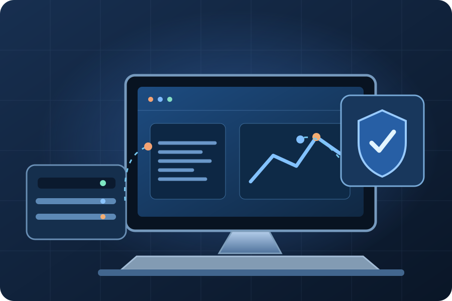

Atendimentos
Solicitações, aceite e acompanhamento de chamados.
Disponível conforme permissõesÁREA RESTRITA · PROXITI
Seu acesso à operação, aos atendimentos e aos recursos autorizados.

Acesso individual · Não compartilhe suas credenciais
CENTRAL TÉCNICA / ÁREA PRIVADA
Sua operação, seus atendimentos e recursos.
Nenhuma pendência por enquanto.
Sua conta ainda não foi autorizada pela administração.
VISÃO GERAL · PROXITI
Solicitações, aceite e acompanhamento de chamados.
Disponível conforme permissõesCursos rápidos, apostilas e materiais próprios.
Disponível conforme permissõesEquipamentos atribuídos e termos de utilização.
Disponível conforme permissõesNome profissional, foto e segurança da conta.
Gerenciar minha contaSeus recursos aparecem conforme as permissões autorizadas pela administração. O portfólio público individual permanece em implantação.
PROXITI · CENTRAL DE OPERAÇÕES
Prioridades, responsáveis e histórico dos atendimentos.
Acompanhe cada etapa. Solicitações sem responsável ficam disponíveis aos técnicos autorizados.
Carregando chamados…
O histórico, as mensagens e as ações do chamado aparecerão aqui, sem sair da caixa de entrada.
Novos convidados começam com acesso pendente. A liberação e as permissões são definidas individualmente pelo administrador.
Edite os textos ligados ao site pelo identificador. A exclusão remove a personalização e restaura o texto estático do site. Arquivos-fonte, checkout e código continuam protegidos no GitHub.
CONTA E IDENTIDADE
Controle sua identificação no painel e proteja suas credenciais.